Балам, привет!
Этот сайт был создан для самой лучшей девушки во все и мире а именно Медине (пока) Джафаровой ;)) Моя любимая хочу от всей души поздравить тебя с твоим днем! Ведь ровно 17 лет тому назад на этот свет открыла глаза одна чудесная маленькая принцесса, балам, я искренне желаю тебе крепкого здоровья! Долгих, счастливых и совместных лет жизни! Я знаю и я уверен в том что ты со всем справишься то что все твои желания все твои цели будут достигнуты, запомни мои слова ты достигнешь тех высот о которых ты еще даже не знаешь)) у тебя будет самое светлое будущее, и в этом будущем мы будем вместе, так сказать у нас будет светлое будущее. Этот минималистичный сайт был сделан для тебя чтоб ты в любой момент могла зайти прочитать и насладится его содержанием, тут в основном хранятся наши воспоминания и мои мысли о тебе, я старался все описать в пределах доступного и сделать так чтоб тебе было приятно видеть и читать его, я тебя очень сильно люблю моя дорогая, начинай уже читать и наслаждаться <3
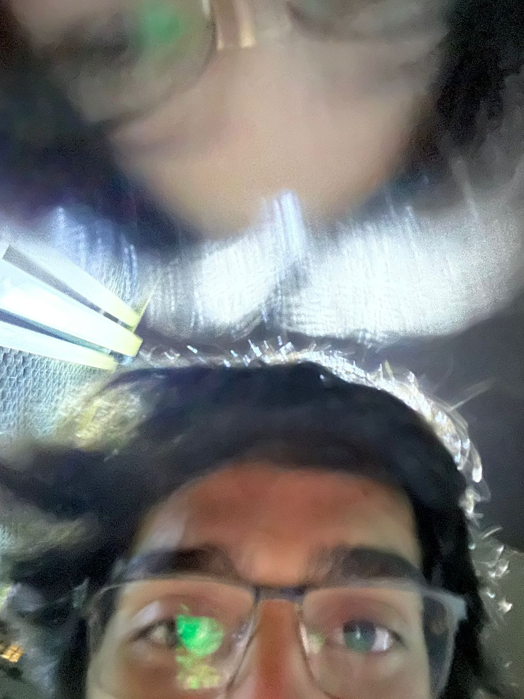
03.08.25
Наше первая совместная фотография, можно сказать начало истории) Помню как после первых прогулок я хотел иметь побольше фотографий с тобой в своей галерее но никак не получалась, и в последний момент помню до твоего улета в Дубай потом в Грузию, когда я еще не знал что самая близкая для меня девочка вернется вновь, я сделал эту фотографию, хоть она и не самая удачная, но она хранит очень много воспоминаний внутри меня)) Помню все до малейших деталей как ты я Сара и еще придурок был с нами помню как тянули время помню как оглядывались отправляла Сару домой были не в самых комфортных условиях но были вместе, что я очень ценю, для меня после этой фотографии открылись будто бы новые врата в жизни, все кардинально поменялось у меня, чему я на самом деле рад<3
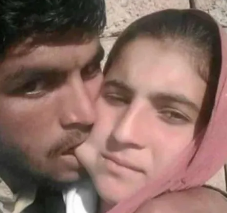
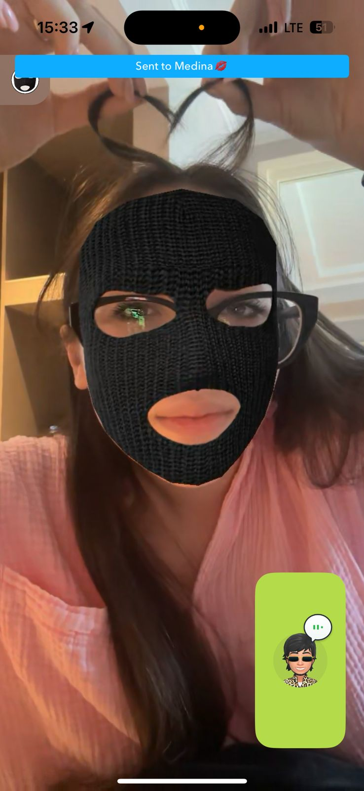
13.08.25
Следующей твоей фотографией в моей галерее оказалась эта, помню как ты все время в начале общения надевала эту мою самую ненавистную маску, охх как же я бесился…), но эта фотка стала очень милой для меня что решил так заскринить:)
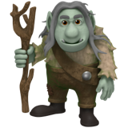
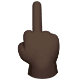
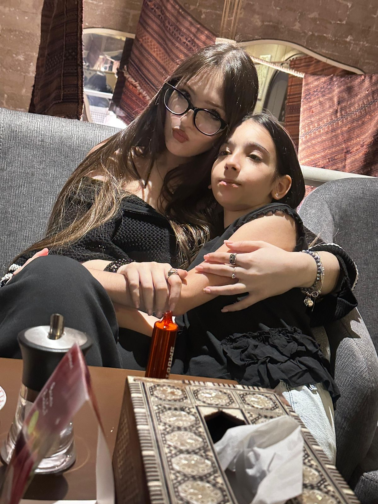
13.08.25
Тут я вижу двух самых любимых для меня девочек, одну из них я стал видеть как спутницу всей своей жизни, как будущую мать наших детей, а другую как младшую сестру которая будет обеспеченна помощью любовью и заботой «старшего брата» который готов всегда встать в защиту своей сестренки!
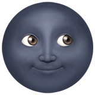
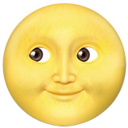
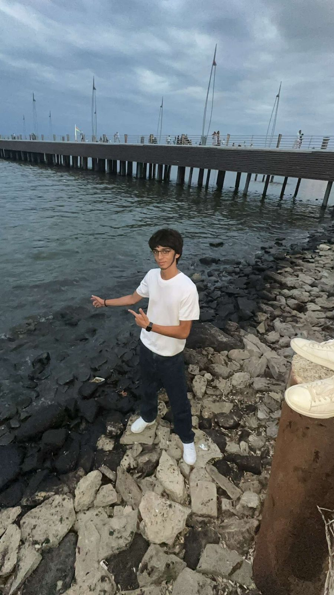
16.08.25
Один из самых приятных воспоминаний для меня это когда мы вдвоем сидели на берегу моря и раскрывались друг другу, тогда ты впервые решила открыться мне о своей семье, рассказывала многие моменты, которому я придавал огромное значение, к которым я детально прислушивался и узнавал тебя еще лучше изнутри, я очень ценю это. Еще помню в тот день при встрече я был без настроения и один неприятный момент был между нами, но именно тут на этом берегу мы его обговорили двоем услышали друг друга, и я железно осознал что все, ты действительно та самая, внутри меня будто что то екнуло, и я стал еще сильнее испытывать к тебе чувства, я уже тогда не хотел терять тебя!
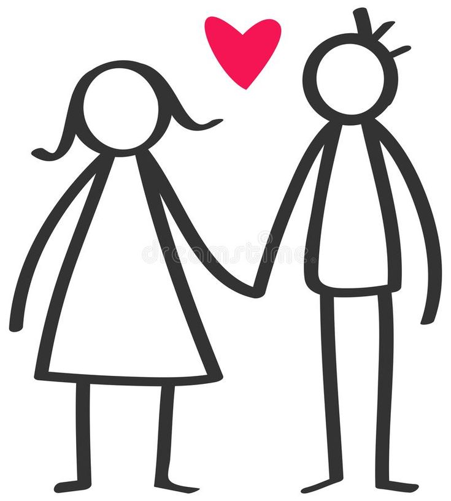
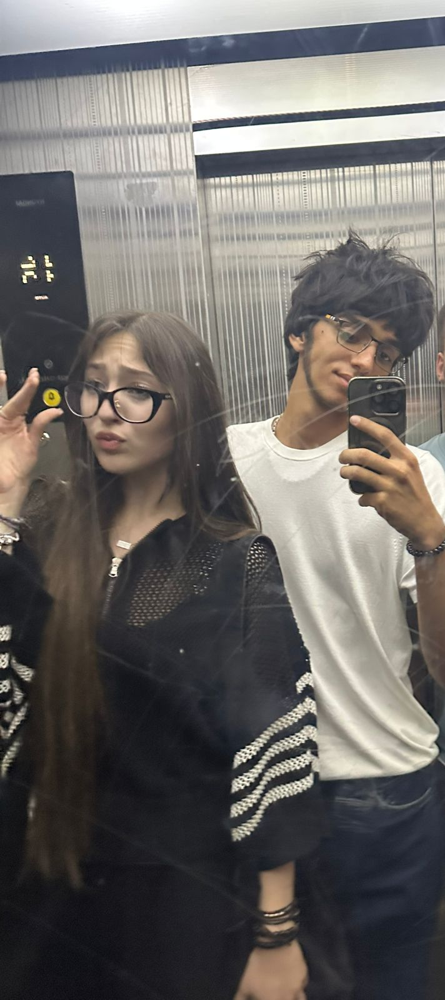
16.08.25
Первая совместная фотка после нашего двух недельного расставания, знала бы ты как я был рад встретить тебя снова и провести еще больше времени с тобой и разузнать тебе еще лучше и ближе это можно сказать сыиграло большую роль в наших с тобой отношениях!! <3
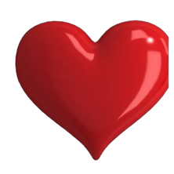
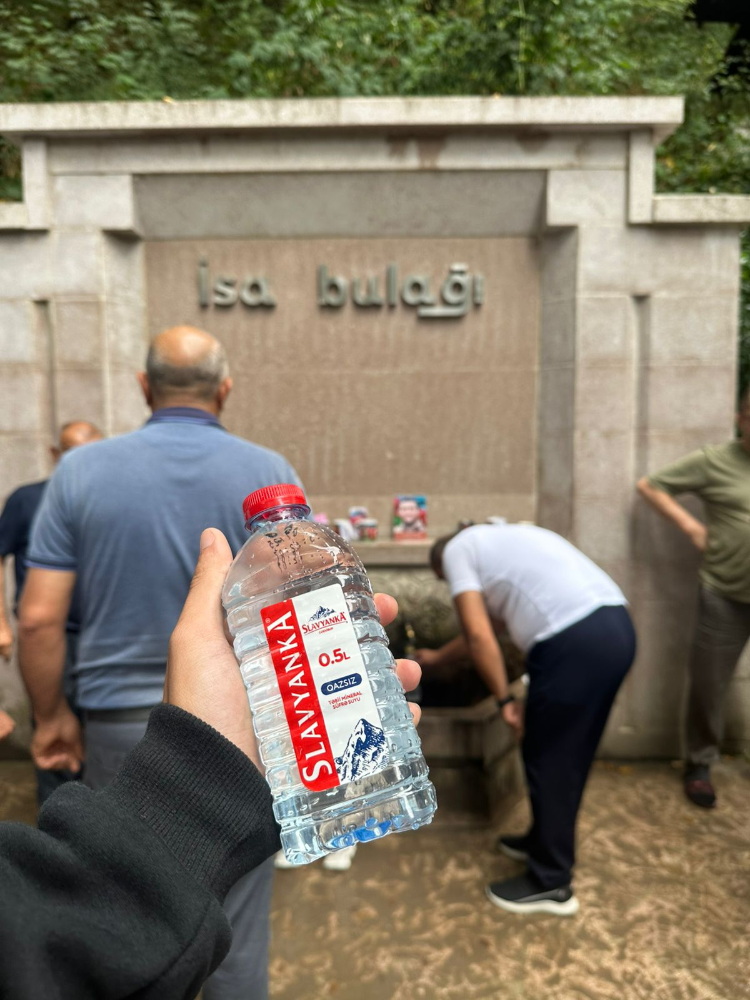
17.08.25
помню то время когда старался максимально часто, буквально каждый день видится с тобой, но был один неприятный момент когда я вынужден был уехать с тетей в Карабах, но и то это тоже сблизило наши отношения, помню как тогда в первые познакомился с самым близким для тебя человеком которая заменила тебе маму это Ирма. Помню свой первый диалог с ней как она уважительно беседовала со мной как я слушал и вникал в ее слова, помню как просила пофоткать там все и скинуть тебе, что я и сделал, ну как же без ее приглашения к ней спустя время в октябре, но кто знал что жизнь обернется немножко по другому:( Тут на фотке я специально для тебя набрал родниковую воду с Шуши и привел ее тебе
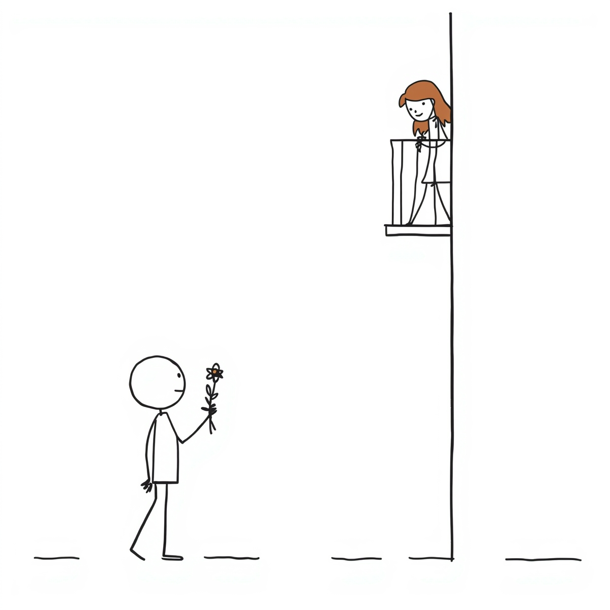
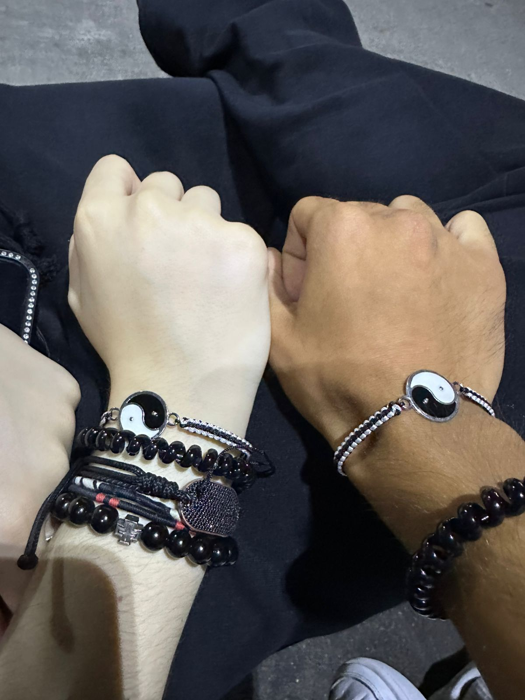
18.08.25
И буквально на следующий же день с моего приезда помню твой звонок, когда мы увиделись совсем спонтанно) Как я ходил по городу с одним придуроком и братом, и отвечаю на твой звонок ты говоришь про возможность увидеться, и я в тот же момент бросаю все дела и пулей мчусь просто к тебе, ты бы знала как для меня это было важно, я тогда помню еще искал кулоны для нас и как хорошо что судьба сыграла мне на руку прям после покупки вижу звонок от самой любимой девушки, для меня этот кулон значил многое и я хотел чтоб у тебя тогда было что то рядом что действительно тебе даже на расстоянии могло напоминать обо мне, о том что я всегда рядом!<3
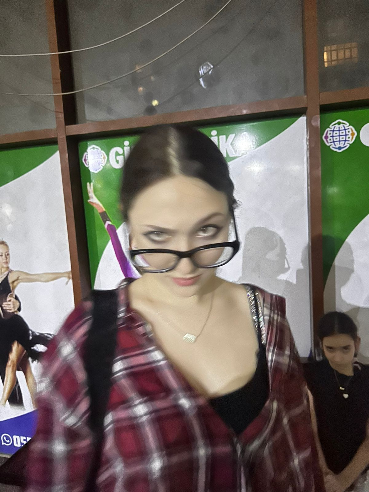
20.08.25
в этот день я бы сказал один из самых приятных моментов моей жизни рядом с тобой, когда мы буквально с утра рано встретились и до вечера были вместе, и именно во дворе у джейран;) я, ты и сарачка, как мы дурачились пол дня, как мы вели душевные разговоры как мы страдали фигней, снимали тт на память особенно то видео где мы втроем обняли друг друга и по типу того но самое главное что мы были вместе! И я прекрасно помню весь тот день у меня даже до сих пор остались сигареты и зажигалка с того дня) которую я храню на память
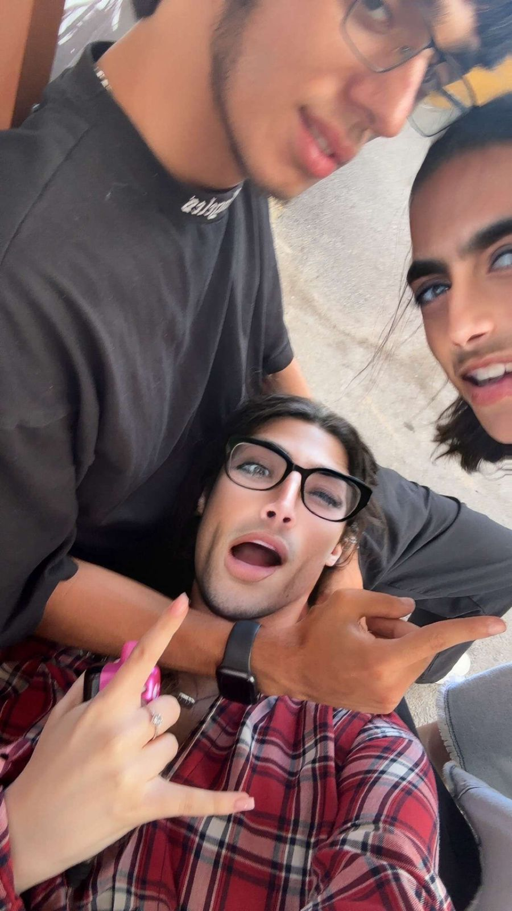
20.08.25
Твоя а значит и моя самая любимая фотка, как же мне нравилось когда ты вот так лежала облокотив голову на меня смотря мне в глаза пока я массирую тебе голову и любуюсь тобой, хочется их пережить снова я очень берегу эти моменты у себя глубоко в сердце, они как сокровище для меня<3
- С
- Д
- Н
- Ё
- М
- Р
- О
- Ж
- Д
- Е
- Н
- И
- Я
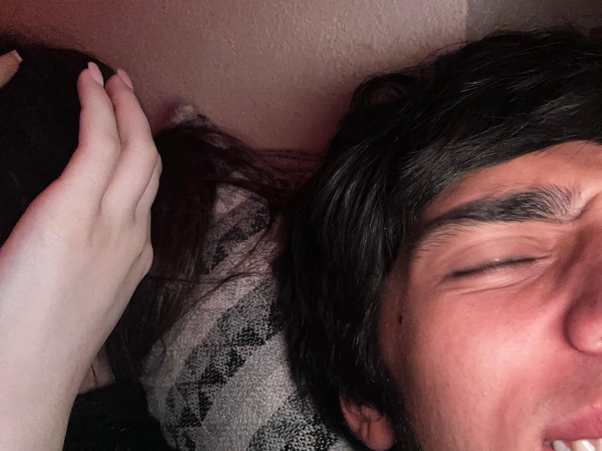
20.08.25
Последняя наша совместная фотка… Эх, я запомнил на всю жизнь тот момент когда все уехали у нас не было достаточно времени меня поджимал отец а тебя задерживала дома бабушка, но в итоге у нас получилось увидится, сначала на балконе а потом и внутри дома, помню те последние часы- минуты прекрасно, тогда медина я переубедил себя и решил на последок признаться тебе в своих чувствах я помню как ты была в шоке у тебя пошли слезы я успокаивал тебя но все же внутри я сам не меньше тебя переживал за все, но для меня было в первую очередь важным чтоб ты была спокойна чтоб мы провели очень хорошо это время, а я скажу мы прям очень насыщено этот день провели я пришел к тебе с утра и до самого вечера мы были вместе, это самый лучший день для меня который мы провели вместе, и я уверен что таких дней у нас в будущем будет еще больше!! В тот день я дал самому себе обещание что мне глубоко наплевать на это расстояние, я сказал себе что я буду ждать я был уверен в том что мы снова увидимся и будем вместе, и до сих пор я не
изменил свое мнение свое отношение к тебе, они только улучшились и идут наверх, мы вместе преодолеем это расстояние, мы есть друг у друга знай это! Я всегда рядом даже не смотря на расстояние, я всегда ЛЮБЛЮ ТЕБЯ!!!
- М
- О
- Я
- Л
- Ю
- Б
- И
- М
- А
- Я
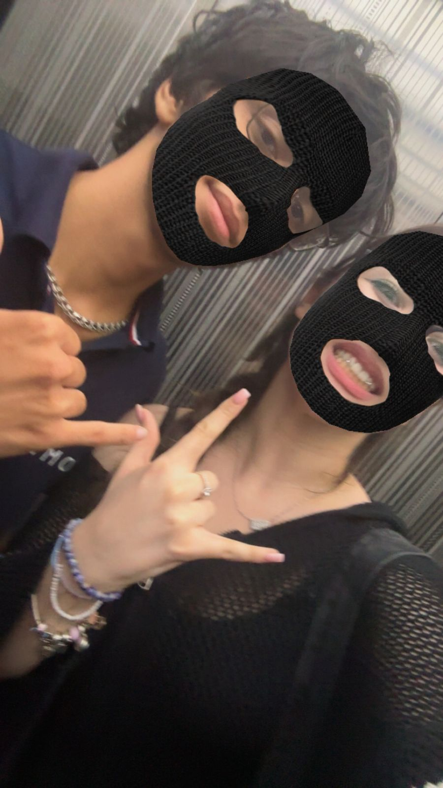
Я уже точную дату этой фотки не помню, но она очень приятная для меня как ты просто внезапно в лифте сказала давай сфоткаемся и вот сделали это чудо которое я до сих пор люблю пересматривать у себя в галерее
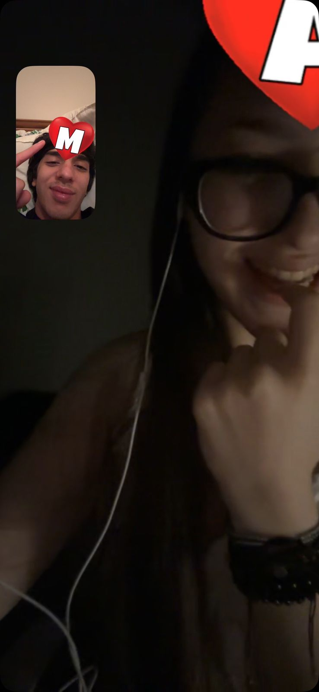
Когда только увидели эту маску и стали пользоваться ей, как же нам на то время было хорошо, хоть мы и уже были на большом расстоянии но не отставали друг от друга, с каждым днем улучшали и по сей день улучшаем наши отношения, я тебя очень сильно люблю
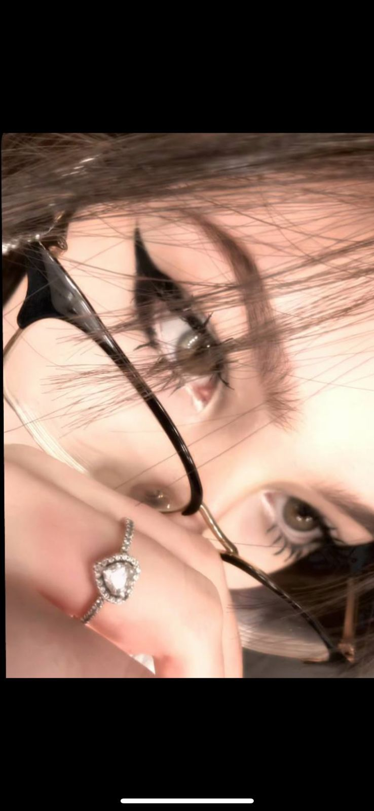
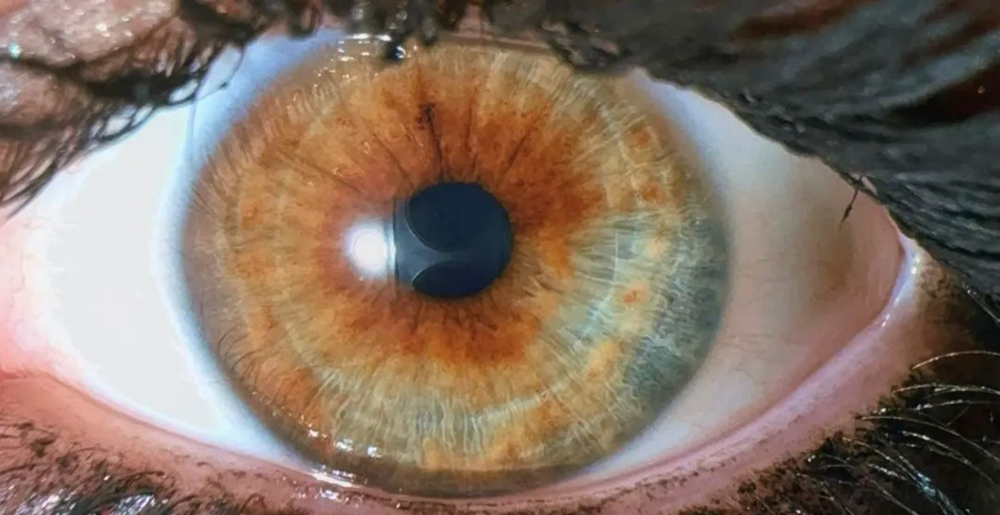
Это самые красивые глаза которые я видел за всю свою жизнь, они наполнены красотой любовью и в тоже время жизненной болью, я знаю что такие чудесные глаза много чего что не должны были видеть видели, но эти глаза имеют для меня очень большой смысл, и после я хочу чтоб эти глазки только радовались виденному и искрились от счастья, не будет больше никакой грусти и сострадания в них, Глазки моей любимой девочки<3
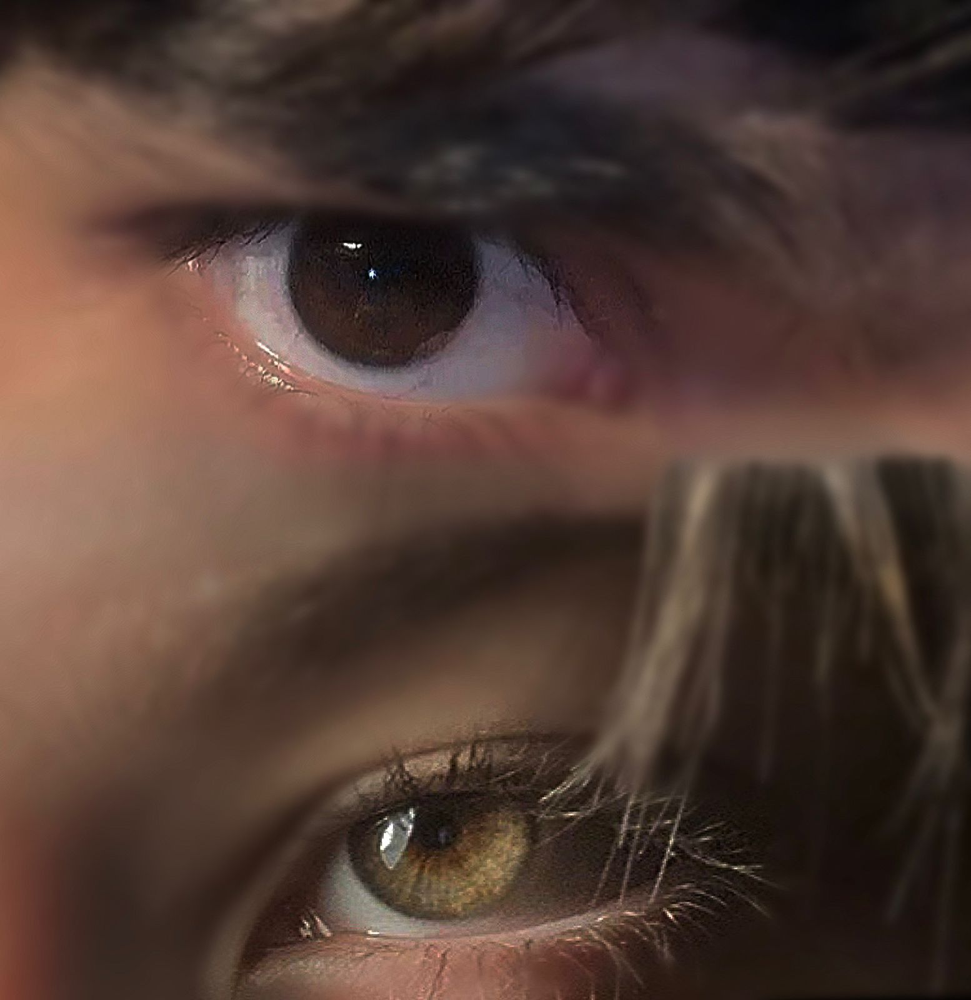
Я считаю что сочетание этих фотографий этих глаз являются самым живописным самым красивым что только человечество может увидеть, было бы интересно как бы выглядело смесь этих глаз в одном маленьком человеке;))
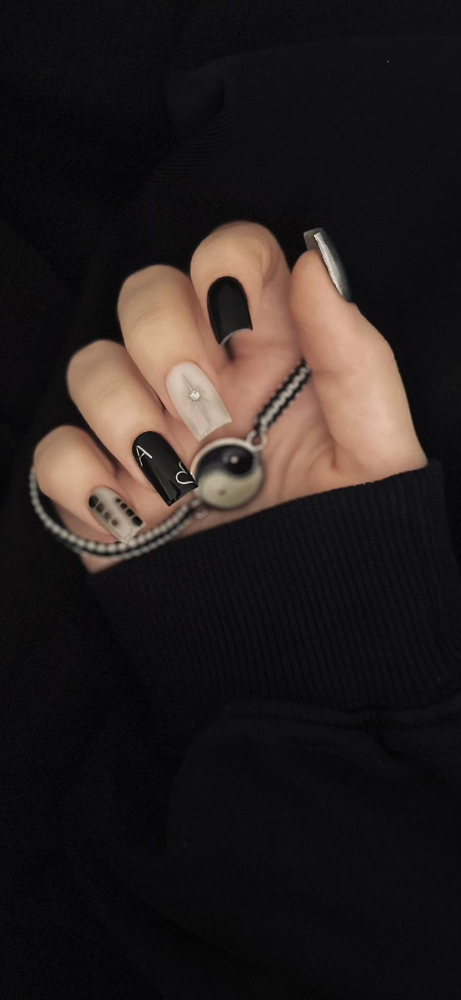
А это САМЫЕ ПРЯМ САМЫЕ ПИЗДАТЫЕ НОГОТОЧКИ В МИРЕ которые я только видел, исключая всю красоты твоих нежных рук, маникюр который украшает еще больше твои руки делает их просто ослепительным, каждый раз когда я открываю свой телефон я вижу твои глаза и твои руки, особенно я обращаю внимание на твой безимянный пальчик с моим инициалом;) Это было очень не ожиданно и очень приятно для меня когда я их только увидел, я уже сказал и себе и тебе что все этот палец будет до конца моим когда нибудь я надену на него обручальное колечко!! А ведь все начиналось с «что за чушкарский символ»)))